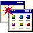
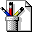
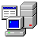
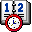
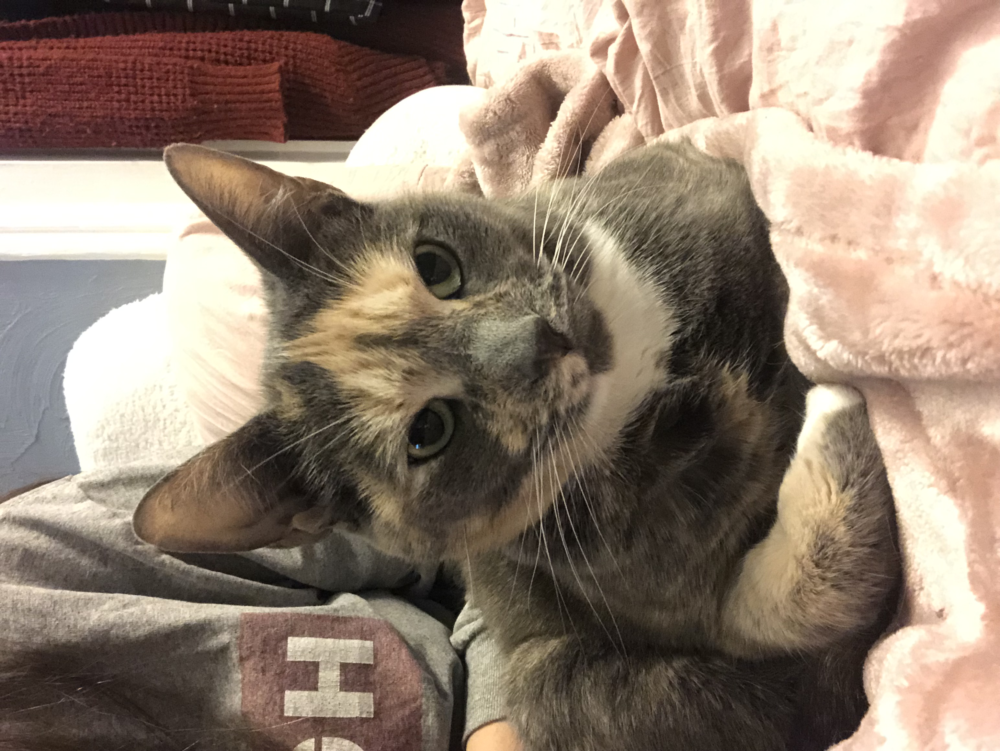
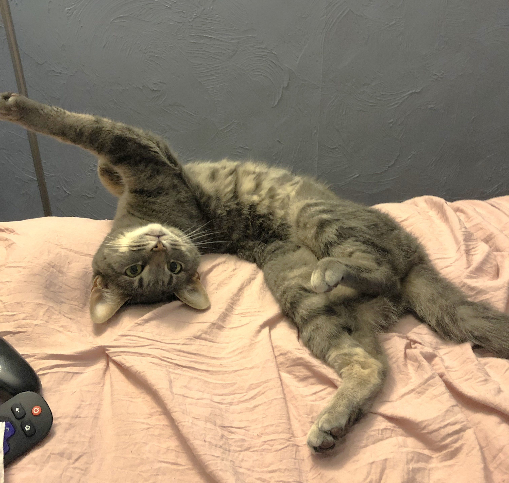
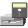

-

Programs -

Paint -
 3D Pinball
3D Pinball
- Minesweeper
- Notepad
-
 Documents
Documents
-
 Projects
Projects
-
 Skills
Skills
-
 Contact
Contact
 Settings
Settings Help
Help
Run...

Hello! I'm Emily.
I'm a recent software engineering graduate with a lifelong love for computers.
I grew up playing any PC game my mom would get me, with my favorite being Nancy Drew
(I guess I've always loved having a problem to solve). In my teenage years I was first introduced
to coding by decking out my MySpace page, albeit oblivious to the fact that I was even coding in
the first place.
While this has always been a hobby of mine, I never considered it as a career path.
I obtained my first Bachelor's degree in music but realized it was not something I wanted to do
for the rest of my life. As I seriously considered my options, I realized that technology was
the only field that I could see myself being happy and excelling in. I received my second Bachelor's
in software engineering in March 2026 and am currently looking for a full-time, remote or local,
web development or software development position. I am most passionate about front-end development
but am open to any opportunities that will allow me to learn and grow as a developer.
When I'm not coding, you can usually find me playing video games (some things never change),
reading, going for walks, or playing with my two cats Nala (left) and Daisy (right).


Here are some of the projects I've worked on:
- Nexora - A landing page example for a fictional company that provides IT services, built using HTML, CSS, and JavaScript.
- Weather App - Browser-based application for searching and displaying weather data by city using the OpenWeather API.
- Jane Doe Portfolio - A fictional portfolio website built using HTML and CSS to demonstrate impeccable design layout, which earned me the "Web Development Foundations Excellence Award" from my time at WGU, with excellence awards being given to only 1-2% of the student body.
I have earned two Bachelor's degrees:
- Bachelor of Science in Software Engineering (Feb 2026)
- Bachelor of Art in Music (2016)
The main tech stack I use for my projects are:
- HTML/CSS
- JavaScript
- Python
- Java
- SQLite
- Visual Studio Code
- Canva
- GitHub
I'm always looking to learn new technologies and expand my skill set, so even if I don't have experience with a specific programming language or tool, I'm open and eager to learning it if it's required for a position.
I have also earned the following certifications:
- AWS Cloud Practitioner
- CompTIA Project+
- ITIL Foundation in IT Service Management
If you're interested in discussing a job opportunity, you can reach me at my email.
This folder is empty.
-

3½ Floppy (A:) - (C:)
- (D:)
-
 Control Panel
Control Panel
-
Projects
-
Skills
-
Contact